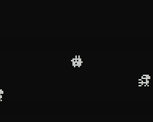

About the game
This game heavily inspired by Minit is a very small adaptation for an ASCII console.
It was made as a 1-week project in a group of 3 game programmers during the M1 year.
The game is pure C++ using the console as main display.
My Contributions
I was responsible for the display of the game, creating sort of sprites for entities and handling the display loop.
I also "drew" the entities sprites.
Gallery
